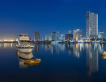
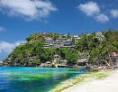
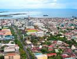
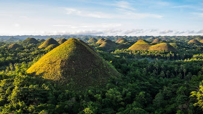
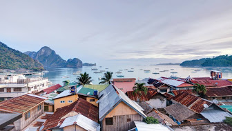

Manila
The Philippines’ bustling, bayside capital, with Spanish colonial landmarks & museums.

Boracay
Philippine island known for White Beach, Bulabog Beach water sports & Mount Luho views.

Cebu
Philippine island province with dive sites, beach resorts & Cebu City's Spanish colonial heritage.

El Nido
Philippine municipality known for its beaches, dive sites & the islands of the Bacuit archipelago.

Bohol
Philippine island with Chocolate Hills & tarsiers (tiny primates), plus diving & dolphin-watching.

Palawan
Philippine island known for Puerto Princesa Subterranean River National Park & Tubbataha Reefs Park.